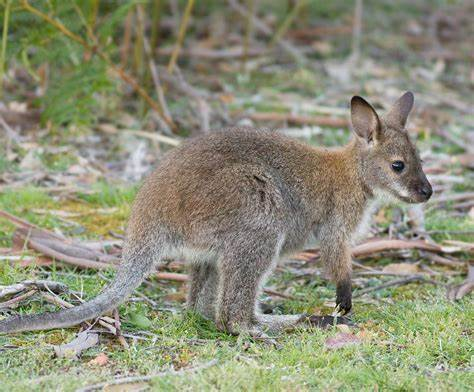
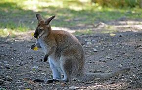
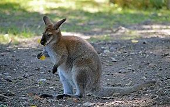

Кенгуру – рід великих сумчастих тварин з сімейства кенгурових (Macropodidae). Найвідоміша австралійська тварина. У загальному вжитку назва використовується для опису найбільших видів цього сімейства: червононогих падемелонів, антилопових кенгуру, а також східних сірих (або велетеньських) та західних сірих кенгуру.
-Харчуються кенгуру рослинною їжею, викопуючи коріння рослин за допомогою передніх лап, які своєю формою вельми нагадують людські руки.
-За приблизними підрахунками, кенгуру в Австралії приблизно вдвічі більше, ніж людей – зараз близько 50 мільйонів особин. У деяких районах вони навіть завдають відчутної шкоди, витоптуючи або пожираючи сільськогосподарські угіддя.
-Денну спеку кенгуру зазвичай перечікують в тіні, і за їжею виходять в основному в сутінках.
-Cмейство також включає дрібніші види, такі як валлабі та деревні кенгуру (що мешкають на деревах), загалом близько 63 видів цих сумчастих.

.jpg)
.jpg) 

-Як і багато інших тварин, вони дуже ліниві. Вони вважають за краще більшу частину свого часу просто відпочивати, щоб зберегти енергію.
-Кенгуру вважають за краще харчуватися пізно ввечері або в нічний час, коли температура трохи падає. Їх раціон харчування в основному складається з трави, листя, папороті, квітів і т.д. крім трави вони також харчуються комахами.
-Ви бачили як спортсмени бодібілдери позують перед дзеркалами або під час змагань?
Так ось, вчені прийшли до висновку, що самки кенгуру люблять самців з хорошою м’язовою масою. Чим спортивніше самець, тим більше у нього шансів завоювати серце самки.
Також, вчені помітили, що самці часто позують перед самками, згинаючи свої руки, аналогічно бодібілдерам.